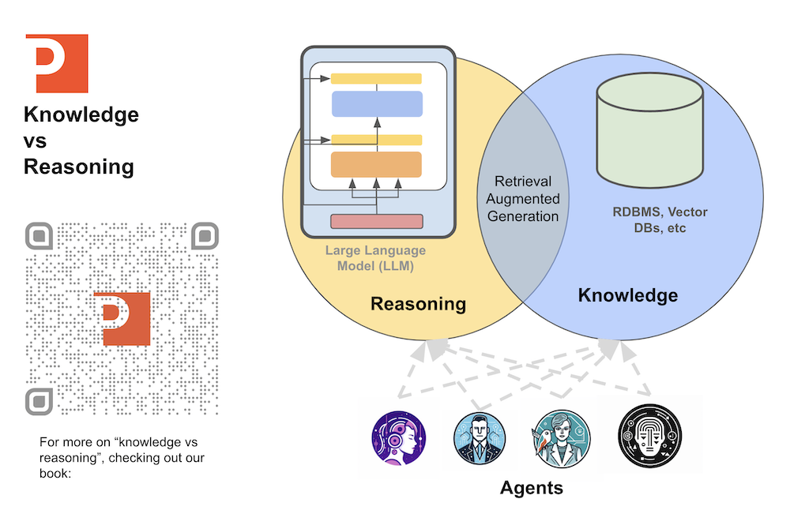
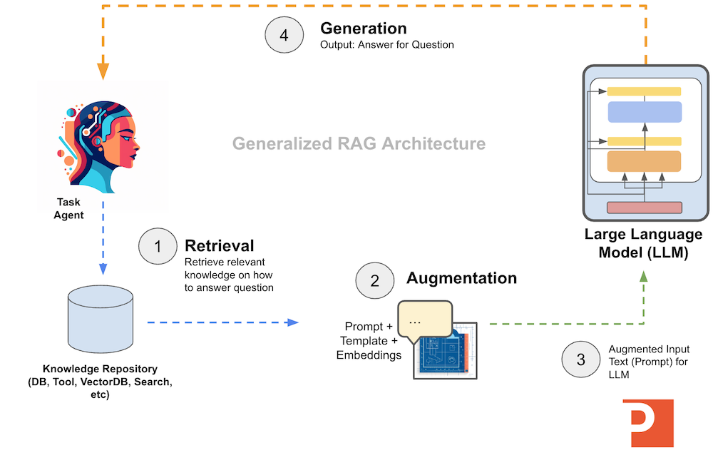
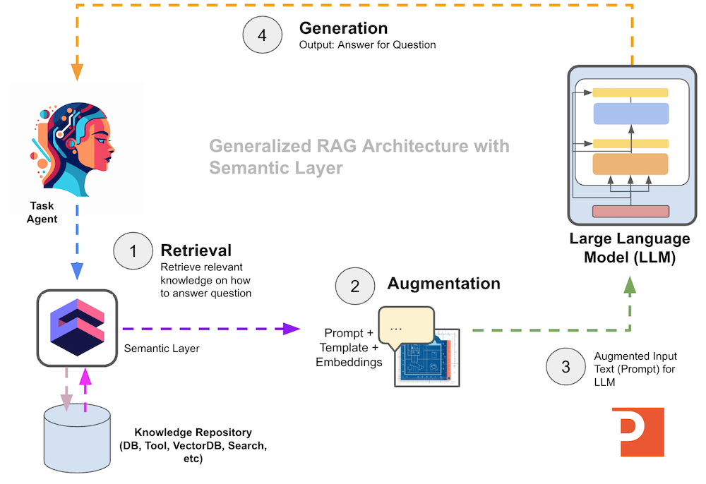
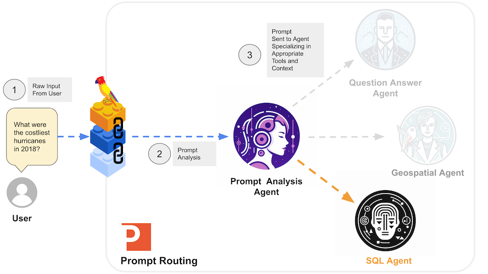
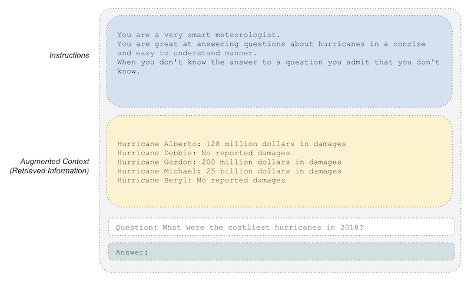
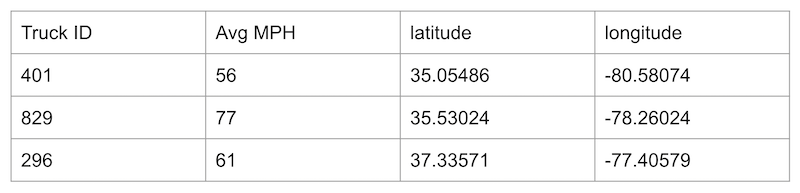
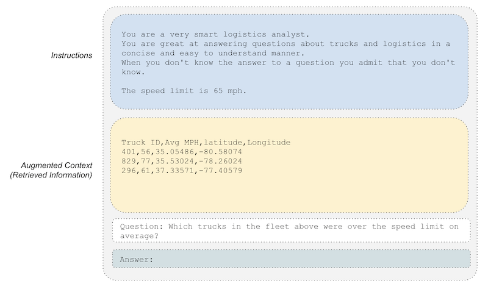

Building Natural Language User Interfaces over Analytics Applications
Using LLMs and the Semantic Layer to Expand the Analytics User Base
Author: Josh Patterson
Date: January 18th 2024
Introduction
In the evolving landscape of knowledge work platforms, the rise in end-user numbers presents both opportunities and challenges for organizations. Training new users on analytics tools is not only a resource-intensive process but also time-consuming. Recognizing this, the integration of a natural language interface into analytics products emerges as a key solution, promising a significant reduction in training time and a simultaneous boost in productivity. As technical leaders in Fortune 500 companies navigate the complexities of managing expanding user bases, leveraging advancements in Large Language Models (LLMs) becomes pivotal for staying ahead of the curve.
This article explores using natural language, LLMs, and LangChain as a front end interface for an analytics or report generation application.
The Rise of Natural Language in the User Experience
In recent years more data is collected from more types of digital devices, expanding the amout of data work in the enterprise. With more data work brings more new users, and this trend demands end-users to undergo specialized training for each application, contributing to prolonged onboarding times and increased costs. Compounding this issue is the expectation in some cases that analysts should possess knowledge of a programming language, introducing an additional layer of complexity to the usability of analytics tools.
While SQL boasts the broadest adoption within the analyst community due to its user-friendly nature, training large numbers of new users on SQL remains a time-consuming and expensive endeavor. Recognizing these challenges is pivotal for technical leaders navigating the landscape of knowledge work platforms. This section aims to shed light on the obstacles associated with user interface design and skill requirements, paving the way for the exploration of how LLMs can offer a solution to streamline user interactions through Natural Language User Interfaces (NLUIs). This approach not only reduces the training time for end-users but also significantly enhances productivity by democratizing access to analytical tools.
In 2023 we saw LLMs burst onto the scene with their ability to understand natural language, write code, and answer logical questions.
In 2024, investing in LLMs for reasoning applications has become a strategic imperative for forward-thinking organizations.
LLMs allow us to analyze and process raw natural language and capture the subtlties that we’re previously opaque to our systems. With this advancement in natural language processing, we can now begin to think about using natural language as a part of any user experience. LLMs allow someone to quickly map a natural language interface over any system, be it virtual (e.g., analytics, user interface, shopping system, etc) or physical (e.g., elevator UX with voice interface).
The value of using natural language is that it becomes a user interface that everyone is taught from a young age, so the learning curve is reduced by an order of a magnitude.
This suddenly opens up the potential userbase of any system to a much wider audience, lower training costs and increasing productivity for organizations.
Challenges with Integrating Natural Language in Applications
In the pursuit of integrating Large Language Models (LLMs) into a product (such as an analytics application), we face challenges such as:
- parsing the subtle variations in natural langauge
- integrating private enterprise knowledge into the reasoning system into answers
- generating a natural language response based on the integrated private knowledge
Foundationally we want to offload the knowledge part to the outside retrieval system and let the LLM only focus on reasoning. I write a lot about this topic in our online ebook “Introduction to Large Langauge Models”. The idea is also visually illustrated in the diagram below.

With the above challeneges in mind, and the “knowledge vs reasoning” architecture in mind, we can start to sketch out some design patterns.
Using LLMs to build Natural Language User Interfaces
LLMs are adept at analyzing and reasoning through plain natural language questions. However, many times we need to do several passes over an input natural language query to determine the best way to respond. To organize our natural language user interface to make quality responses, we need:
- A system architecture to integrate private enterprise knowledge with LLM-based reasoning
- Prompt analysis to help make decisions on how to further process the prompt
- A system to route the prompt to the correct set of specialist agents or workflows
- A way to integrate private data with processed prompts for futher analysis
- A way to generate a natural language response
Let’s start off by defining an architecture for managing the integration of knowledge and reasoning.
Architecture, LangChain, and Retrieval Augmented Generation
If we want to integrate the knowledge management and the reasoning parts of our application, a great architecture that works well with LLMs is Retrieval Augmented Generation (RAG).
With RAG we need 3 components to our architecture:
- Retrieval: go get the knowledge we need to reason over
- Augmentation: take the data, graph, or knowledge and integrate it into a prompt with further processing instructions
- Generation: now take the newly created prompt and send it to an LLM for further reasoning
Visually we can see the RAG architecture below:

To implement the above architecture we could do it with raw Python, but frameworks such as LangChain have a lot of useful primitives, classes, and tooling to help accelerate LLM-application development.
If we want to further improve our general RAG architecture, we can add a semantic layer (such as Cube.dev) to the retrieval stage of the RAG pipeline and use data modeling for better retrieval performance, as shown in the diagram below.

Adding a semantic layer to our RAG architecture can help with things such as
- partitioning data automatically according to customer
- better metadata information on tables and columns in your data model
- data modeling over canonical data warehouse tables that is more appropriate for LLM evaluation
Once we have our basic architecture and a programming framework for LLMs, we can move on to user natural language input analysis workflow.
Organizing Our Natural Language Processing Workflow
In an analytics system, we know the N types of questions that will be asked; for the purposes of this example we assume that the system will respond “I don’t know” to any request that it does not have a sub-workflow for. Once we get the raw input from a user input box, we can use a “prompt router” to send the request to different workflows or agents, as shown in the diagram below.

If we can constrain the type of request we’re working with, this allows us to pre-write certain SQL queries as opposed to asking the LLM to write complex SQL under uncertain conditions. This allows our retrieval phase of our RAG implementation to be simpler and more efficient.
Once we have the SQL, we can also extract filter criteria such as user, date, etc from the raw original prompt with LLM calls (e.g., “What date does this question refer to?”). We can manually inject the parameters for the SQL statements based on the answers from the LLM.
Then we run the SQL query manually (retrieval) and serialize the results into a string and insert them into our prompt (augmentation) to generate natural language results (generation), as seen in the exmaple diagram below.

Now let’s dig into what a “prompt router” might look like.
Prompt Routing to Multiple Agents
The first stage of the workflow is to use a “prompt router” (e.g., a type of prompt classifier) to classify the prompt into 1 of N “buckets” or types, as we saw in the diagram above.
In the code block below, we can see a simple example of this idea:
prompt_path_mappings = [
{
"name": "Medical Sales",
"description": "Good for when you need to build a plan for selling medical devices, vaccines, and medicines."
},
{
"name": "Construction Sales",
"description": "Good for when you need to build a plan for selling construction materials"
}
]
destinations = [f"{p['name']}: {p['description']}" for p in prompt_path_mappings]
destinations_str = "\n".join(destinations)
router_template = MULTI_PROMPT_ROUTER_TEMPLATE.format(
destinations=destinations_str
)
router_prompt = PromptTemplate(
template=router_template,
input_variables=["input"],
output_parser=RouterOutputParser(),
)
prompt_type_router = LLMRouterChain.from_llm(llm, router_prompt)
And then later on when we want to use our prompt routing
(prompt_type_router) method:
input_query = "build a medical sales plan for vaccines"
prompt_route = prompt_type_router.route( input_query )
if "Medical Sales" == str(prompt_route.destination):
print("Building medical product sales plan...")
This allows us to break down logic into workflows and embed snippets of reasoning between the stages of the workflow.
| Note: LangChain now has functionality similar to this called RunnableBranch. |
|
A Langchain RunnableBranch
dynamically directs program flow based on input conditions, enabling
non-deterministic step execution. It enhances structure and consistency
in LLM interactions, offering routing through a RunnableBranch or custom
factory function. The former selects and executes a runnable based on
conditions, while the latter returns a runnable without execution based
on input from a previous step, implemented via the LangChain Expression
Language. |
Once we know what kind of analytical question we’re dealing with, we can send the prompt over to an agent or group of agents for further focused processing.
These agent(s) can now be more specialized and focus their workflow of prompt analysis on answering the specific analytic question for that “bucket”.
Prompt Augmentation with SQL Results
Now that we know what kind of query we’re dealing with, we need to retrieve the relevant information from a knowledge repository to augment our prompt (in a retrieval augmented generation architecture).
In some cases we may not know the database schema and will need to use a tool such as LangChain’s SQLChain.
In other cases, however, we can leverage our knowledge of the schema ahead of time and manually write the SQL for our agent. In this case, we can use further focused prompt analysis to determine variables for our SQL such as filter criteria or date ranges. We’ll also want to segment out the data that only the current user should be able to see.
For example, if we have classified the user input as a question about “where is my fleet of trucks today?”, we could then map that to pre-written SQL that might look like:
Select [truck id], [Avg MPH], latitude, longitude from logistics where CustomerID == [user-id-inserted-here];Which would query a table such as one represented by the sample rows below:

If we are able to use pre-written SQL such as the above command, we can use standard database connection libraries to retrieve the result rows from the RDBMS and then serialize them back into a new augemented prompt.

Now we’re ready for our agent to pass this augmented prompt on to our LLM for generation.
Generating Natural Language Analytical Results
LLMs are great at generating comprehensive plain English answers based on the insights extracted from the organization’s private data.
Now that we have a newly augmented prompt, we can pass it over to our LLM to generate a natural language response that is readable by a technical or non-technical user.
The answer from the above augmented prompt might look something like:
Truck 829 was running above the speed limit of 65 MPG on average.
Depending on how we want to display the above information to the user, we might have another post-analysis prompt that re-wrote the above answer in a certain way, or we might ask several questions and then combine all of their answers into a final augmented prompt to synthesize a summary report. The embedded video below shows an example of what a finished report could look like.
Summary and Webinar
If you enjoyed this article, sign up to watch our webinar with Cube and Quantatec on January 24th where we’ll talk about how we put these ideas into practice for Quantatec’s new analytics system.